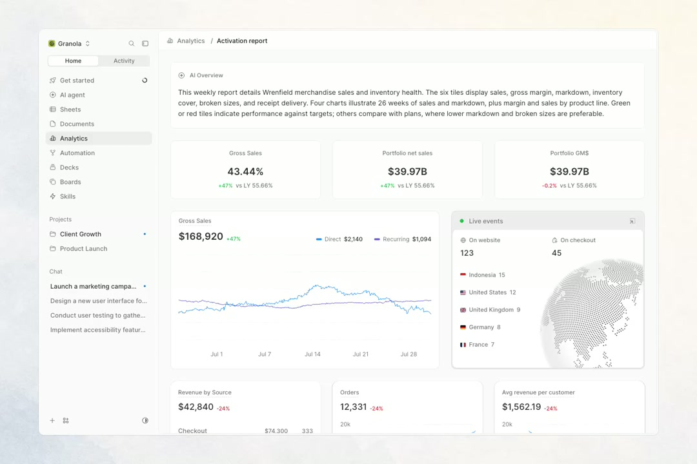

Build the design system and skills your agent can follow
I asked Claude Code to build a screen from my design. It came back very fast, clean, and completely wrong.
At glance, everything looked fine. But when you look into the details, a lot of things were missing.
I couldn't really blame the agent. I had never told it what makes my product feel right. Those decisions lived in my head, and it had no way to see them.
I think this is what a design system is becoming. It used to be mostly a shared library for a team. Now it is also the place where you write down what good looks like, so an agent can follow along without having to guess.
This is how I have been building mine, one layer at a time.
搭建 Agent 能遵循的设计系统与 skill
我让 Claude Code 照着我的设计稿做一个页面。它交得很快，代码也干净，但完全不对。
乍一看都没问题，细看却缺了很多东西。
这也怪不了 Agent。我从没告诉过它，我的产品怎样才算对味。这些决定只在我脑子里，它根本看不到。
我觉得设计系统正在变成这样：过去它主要是团队共用的组件库，现在它也是你写下“什么算好”的地方，让 Agent 不用猜就能跟上。
下面是我一层一层搭建自己这套系统的做法。
1. Start with design primitives
Primitives are the raw values. Colors, type, spacing, radius, shadows, and motion. On their own they don't mean much yet. They are more like a palette you pick from later.
I keep them in one file that every product reads from:
/* Color */
--gray-0: #ffffff;
--gray-50: #fafafa;
--gray-100: #f4f4f5;
--gray-200: #e4e4e7;
--gray-400: #a1a1aa;
--gray-500: #71717a;
--gray-700: #3f3f46;
--gray-900: #18181b;
--blue-500: #3b82f6;
--green-500: #22c55e;
--amber-500: #f59e0b;
--red-500: #ef4444;
/* Type */
--font-sans: "Inter", system-ui, sans-serif;
--font-mono: "JetBrains Mono", monospace;
--text-xs: 12px;
--text-sm: 13px;
--text-base: 14px;
--text-lg: 16px;
--text-xl: 20px;
--text-2xl: 24px;
--weight-regular: 400;
--weight-medium: 500;
--weight-semibold: 600;
--leading-tight: 1.25;
--leading-normal: 1.5;
/* Spacing */
--space-1: 4px;
--space-2: 8px;
--space-3: 12px;
--space-4: 16px;
--space-6: 24px;
--space-8: 32px;
--space-12: 48px;
/* Radius */
--radius-sm: 4px;
--radius-md: 8px;
--radius-lg: 12px;
--radius-full: 9999px;
/* Shadow */
--shadow-sm: 0 1px 2px rgb(0 0 0 / 0.05);
--shadow-md: 0 4px 12px rgb(0 0 0 / 0.08);
--shadow-lg: 0 12px 32px rgb(0 0 0 / 0.12);
/* Motion */
--ease-smooth: cubic-bezier(0.22, 1, 0.36, 1);
--duration-fast: 150ms;
--duration-normal: 200ms;
--duration-slow: 300ms;At the top of the file, I added a short note asking the agent to take values from here instead of making new ones. Before that, I would often find small surprises, like a 13.5px font or a 10px gap that didn't come from anywhere.
I try not to use these values directly in components. They are there to feed the next layer.
1. 从设计原语（primitives）开始
Primitives 是原始值：颜色、字体、间距、圆角、阴影和动效。单独看，它们还没有什么含义，更像一块调色板，留着以后挑。
我把它们放在一个文件里，所有产品都从这里读取：
/* Color */
--gray-0: #ffffff;
--gray-50: #fafafa;
--gray-100: #f4f4f5;
--gray-200: #e4e4e7;
--gray-400: #a1a1aa;
--gray-500: #71717a;
--gray-700: #3f3f46;
--gray-900: #18181b;
--blue-500: #3b82f6;
--green-500: #22c55e;
--amber-500: #f59e0b;
--red-500: #ef4444;
/* Type */
--font-sans: "Inter", system-ui, sans-serif;
--font-mono: "JetBrains Mono", monospace;
--text-xs: 12px;
--text-sm: 13px;
--text-base: 14px;
--text-lg: 16px;
--text-xl: 20px;
--text-2xl: 24px;
--weight-regular: 400;
--weight-medium: 500;
--weight-semibold: 600;
--leading-tight: 1.25;
--leading-normal: 1.5;
/* Spacing */
--space-1: 4px;
--space-2: 8px;
--space-3: 12px;
--space-4: 16px;
--space-6: 24px;
--space-8: 32px;
--space-12: 48px;
/* Radius */
--radius-sm: 4px;
--radius-md: 8px;
--radius-lg: 12px;
--radius-full: 9999px;
/* Shadow */
--shadow-sm: 0 1px 2px rgb(0 0 0 / 0.05);
--shadow-md: 0 4px 12px rgb(0 0 0 / 0.08);
--shadow-lg: 0 12px 32px rgb(0 0 0 / 0.12);
/* Motion */
--ease-smooth: cubic-bezier(0.22, 1, 0.36, 1);
--duration-fast: 150ms;
--duration-normal: 200ms;
--duration-slow: 300ms;我在文件开头加了一小段说明，要求 Agent 从这里取值，不要自己新造。在这之前，我常会发现一些小意外，比如 13.5px 的字号，或者一个不知从哪来的 10px 间距。
我尽量不在组件里直接使用这些值，它们是给下一层用的。
2. Define the semantic foundations
Semantic tokens describe what a value is for, not what it looks like. Instead of "gray-500", it is "text muted". Instead of "green", it is "status success". Each one points back to a primitive:
/* Surface */
--bg-app: var(--gray-50);
--bg-surface: var(--gray-0);
--bg-subtle: var(--gray-100);
--border-default: var(--gray-200);
/* Text */
--text-primary: var(--gray-900);
--text-secondary: var(--gray-700);
--text-muted: var(--gray-500);
--text-disabled: var(--gray-400);
/* Action */
--action-primary: var(--gray-900);
--action-primary-text: var(--gray-0);
--focus-ring: var(--blue-500);
/* Status */
--status-success: var(--green-500);
--status-warning: var(--amber-500);
--status-error: var(--red-500);
--status-running: var(--blue-500);
/* Layout */
--gap-inline: var(--space-2);
--gap-stack: var(--space-4);
--padding-card: var(--space-4);
--padding-page: var(--space-8);
--radius-control: var(--radius-md);
--radius-card: var(--radius-lg);
/* Elevation */
--elevation-card: var(--shadow-sm);
--elevation-popover: var(--shadow-md);
--elevation-dialog: var(--shadow-lg);
/* Motion */
--motion-hover: var(--duration-fast) var(--ease-smooth);
--motion-enter: var(--duration-normal) var(--ease-smooth);
--motion-panel: var(--duration-slow) var(--ease-smooth);Naming things this way took me a while to get used to. But it makes the agent's job easier, because it can pick a value by what it needs to do on the screen.
It also helps with color. I try to use green, amber, and red only when they mean something, like a task finishing or something going wrong. When they are used just for decoration, the meaning gets harder to read.
Some values I haven't decided yet. For those, I leave a note asking the agent to check with me first. Otherwise it tends to fill the gaps with reasonable guesses, and those guesses slowly become part of the product.
2. 定义语义基础
语义 token 描述一个值的用途，而不是它的外观。不叫 "gray-500"，叫 "text muted"；不叫 "green"，叫 "status success"。每个语义 token 都指回一个 primitive：
/* Surface */
--bg-app: var(--gray-50);
--bg-surface: var(--gray-0);
--bg-subtle: var(--gray-100);
--border-default: var(--gray-200);
/* Text */
--text-primary: var(--gray-900);
--text-secondary: var(--gray-700);
--text-muted: var(--gray-500);
--text-disabled: var(--gray-400);
/* Action */
--action-primary: var(--gray-900);
--action-primary-text: var(--gray-0);
--focus-ring: var(--blue-500);
/* Status */
--status-success: var(--green-500);
--status-warning: var(--amber-500);
--status-error: var(--red-500);
--status-running: var(--blue-500);
/* Layout */
--gap-inline: var(--space-2);
--gap-stack: var(--space-4);
--padding-card: var(--space-4);
--padding-page: var(--space-8);
--radius-control: var(--radius-md);
--radius-card: var(--radius-lg);
/* Elevation */
--elevation-card: var(--shadow-sm);
--elevation-popover: var(--shadow-md);
--elevation-dialog: var(--shadow-lg);
/* Motion */
--motion-hover: var(--duration-fast) var(--ease-smooth);
--motion-enter: var(--duration-normal) var(--ease-smooth);
--motion-panel: var(--duration-slow) var(--ease-smooth);这种命名方式我花了一段时间才习惯。但它让 Agent 做起来更容易：它可以按元素在页面上要起的作用来挑值。
颜色也因此更好管。我尽量只在有含义时使用绿色、琥珀色和红色，比如任务完成或者出了问题。只拿来装饰的话，这些颜色表达的含义就更难读出来。
有些值我还没定。对这些值，我会留一条说明，让 Agent 先来问我。否则它往往会用看似合理的猜测填上空缺，这些猜测又会慢慢变成产品的一部分。
3. Map the components
Components are the pieces you reuse everywhere, like a button, a badge, or a dialog. I use shadcn/ui as a starting point and build on top of it.
Here's the full shadcn/ui set, grouped by job:
- Actions: button, button-group, toggle, toggle-group, kbd
- Inputs: input, input-group, input-otp, textarea, checkbox, radio-group, switch, slider, select, native-select, combobox, calendar, label, field, form
- Overlays: dialog, alert-dialog, sheet, drawer, popover, hover-card, tooltip, dropdown-menu, context-menu, command
- Navigation: sidebar, navigation-menu, menubar, breadcrumb, tabs, pagination
- Layout: card, item, separator, accordion, collapsible, resizable, scroll-area, aspect-ratio, carousel, direction
- Data: table, chart, avatar, badge, marker, progress
- Feedback: alert, toast, sonner, spinner, skeleton, empty
- Agent and chat: message, message-scroller, bubble, attachment, code-block, trace, questionnaire
For each component I use, I write a few things down:
- When to use it, and when to use something else
- Which variant is the default
- One good and one bad example from real code
- How it looks in each state: hover, pressed, loading, empty, disabled, and error
I also try to only document what actually exists. When I described a variant that wasn't built yet, the agent kept trying to use it.
3. 梳理组件
组件是到处复用的部件，比如按钮、徽标（badge）或对话框。我以 shadcn/ui 为起点，在它上面继续做。
下面是按用途分组的完整 shadcn/ui 组件：
- 操作：button, button-group, toggle, toggle-group, kbd
- 输入：input, input-group, input-otp, textarea, checkbox, radio-group, switch, slider, select, native-select, combobox, calendar, label, field, form
- 浮层：dialog, alert-dialog, sheet, drawer, popover, hover-card, tooltip, dropdown-menu, context-menu, command
- 导航：sidebar, navigation-menu, menubar, breadcrumb, tabs, pagination
- 布局：card, item, separator, accordion, collapsible, resizable, scroll-area, aspect-ratio, carousel, direction
- 数据：table, chart, avatar, badge, marker, progress
- 反馈：alert, toast, sonner, spinner, skeleton, empty
- Agent 与聊天：message, message-scroller, bubble, attachment, code-block, trace, questionnaire
每个用到的组件，我都会写下几件事：
- 什么时候用它，什么时候该换别的
- 默认用哪个变体（variant）
- 真实代码里的一个正例和一个反例
- 它在各个状态下的样子：悬停、按下、加载、空、禁用和错误
我也尽量只记录真正存在的东西。有一次我描述了一个还没做出来的变体，Agent 就一直想用它。
4. Define the blocks
A block is a small section made from components. A run card, an approval panel, a task row with a status and an avatar.
I don't design blocks up front anymore. I design a few real screens first, notice which parts I keep rebuilding, and only then turn them into blocks. That way they come from the product instead of a template.
Blocks also help keep the product focused. I've started to think of every screen as a stack of blocks. A header, a few stat cards, a chart, a list, a side panel. When I can name each part of a screen that way, the agent can build it the same way, one block at a time. And when a screen needs something none of my blocks can do, I take it as a sign to slow down and ask if it really belongs.
Here's how one of my screens breaks down, block by block.

4. 定义区块（blocks）
区块是由组件拼成的一小块界面，比如一张运行卡片、一个审批面板、一行带状态和头像的任务。
我不再提前设计区块了。我会先做几个真实页面，留意哪些部分一直在重做，然后才把它们提炼成区块。这样区块来自产品本身，而不是模板。
区块也能让产品保持聚焦。我开始把每个页面看成一摞区块：一个页头、几张统计卡片、一张图表、一个列表、一个侧边面板。我能这样叫出页面每个部分的名字时，Agent 也能照同样的方式，一个区块一个区块地搭出来。如果某个页面需要的东西，现有区块都做不了，我会把它当作信号：先放慢，问问它是否真的该放在这里。
下面是我的一个页面按区块拆开的样子。
视频内容 · 中文说明
视频约 19 秒，无声。先展示 Granola 应用的 Analytics「Activation report」完整页面，随后其他部分淡出，只留下左侧侧边栏。侧边栏中的部分逐个被拆到右侧画布，并标注区块名称：
- workspace switcher — 工作区切换器（Granola 名称、搜索与收起侧栏按钮）
- switcher — 切换器（Home / Activity）
- nav item — 导航项（Get started 的常态与悬停两种状态）
- nav section — 导航分组（Projects 下的 Client Growth、Product Launch）
最后各区块回到原位，重新拼成完整页面：AI Overview 摘要、三张指标卡、Gross Sales 折线图、Live events 实时面板，以及 Revenue by Source、Orders、Avg revenue per customer 三张图表卡。
5. Set the rules and skills
Tokens, components and blocks tell the agent what to build with. Rules and skills tell it how you like things done.
Rules
A rule is one short sentence with its reason right after it. All your rules live in one file the agent reads every time, like CLAUDE.md or AGENTS.md. The reason is what helps the agent handle cases you never wrote down.
Show a status badge on every run card, even while it's running.
People check agents in passing, so the state should be visible at a glance.
Use only one primary button per screen.
If everything is important, nothing is.The easiest way to write rules is to wait until the agent gets something wrong. Write down what it did, what you wanted, and why. That note becomes your next rule.
Skills
A skill is an instruction file for one specific job, like reviewing a screen. Rules are always on, but a skill is only used when its job comes up.
---
name: review-screen
description: Use after building or changing a screen.
---
1. Flag any raw value that isn't a token.
2. Check each block has loading, empty and error states.
3. Check status text matches the real state of the agent.A good skill is clear enough that two people would follow it the same way.
Mine recently caught an approval card that still said "Needs approval" after it had already been approved. It's a small thing, but small things like that are often what make an agent product feel trustworthy.
5. 制定规则与 skill
Token、组件和区块告诉 Agent 用什么来搭；规则和 skill 告诉它你希望怎么做。
规则（Rules）
一条规则就是一句短话，后面紧跟原因。所有规则都放在 Agent 每次都会读取的一个文件里，比如 CLAUDE.md 或 AGENTS.md。有了原因，Agent 才能处理你没写到的情况。
每张运行卡片都显示状态徽标，运行中也不例外。
大家只是顺手看一眼 Agent，所以状态要一眼就能看到。
每个页面只用一个主按钮。
如果什么都重要，就什么都不重要。写规则最省事的办法，是等 Agent 做错一次。记下它做了什么、你想要什么，以及为什么。这条记录就是你的下一条规则。
Skill
Skill 是针对某一项具体工作的指令文件，比如审查一个页面。规则始终生效，skill 只在对应的工作出现时才用到。
---
name: review-screen
description: 在构建或修改页面后使用。
---
1. 标出所有不是 token 的原始值。
2. 检查每个区块都有加载、空和错误状态。
3. 检查状态文字与 Agent 的实际状态一致。好的 skill 要写得足够清楚，换两个人来执行，做法也一样。
最近，我的 skill 就发现一张审批卡片在已经批准后，仍显示 "Needs approval"（待审批）。这是件小事，但让 Agent 产品显得可信的，往往就是这类小事。
What stays with you
An agent can follow a system quite closely. But it can't really decide what great looks like for you. That part still takes time, and some patience.
I have found that the slower work of writing these things down is what lets everything after it move a little faster.
仍要你自己决定的部分
Agent 能相当严格地遵循一套系统，但它没法真正替你决定什么才算出色。这部分仍然需要时间，也需要一点耐心。
我发现，正是把这些东西慢慢写下来的功夫，让之后的一切都能快一点。
评论
评论由 GitHub Discussions 提供。